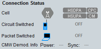
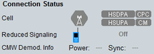

The connection status area displays the current connection states and information for troubleshooting.
For related hotkeys, refer to "Signaling and Connection Control".


The cell icon indicates the overall state of the cell (green = on, gray = off, additional  = pending).
= pending).
- "HSDPA" gray: R99 signal (no HSDPA)
- "HSDPA" green: R5 signal with HSDPA
- "HSDPA+" green: R7 signal with HSDPA+
- "DC-HSDPA+" green: R8 signal with dual carrier HSDPA+
- "3C-HSDPA+" green: R10 signal with three carrier HSDPA+
- "HSUPA" gray: R99 signal (no HSUPA)
- "HSUPA" green: R6 signal with HSUPA
- "DC-HSUPA" green: R9 signal with dual carrier HSUPA
- "CPC" gray: no CPC feature active
- "CPC" green: CPC feature active
- "CM" gray: compressed mode deactivated
- "CM" green: compressed mode active
Displays the corresponding connection states, see also "Connection States".
Additional information about established connections is provided in the UE info, see "Connection Type Established".
Remote command:This information is available while the demodulator stage of the instrument perceives an uplink signal and can be used for troubleshooting.
The text to the left indicates whether the uplink signal power is in range, too high (overflow) or too low (underflow). The text to the right indicates whether the R&S CMW was able to synchronize to the uplink signal or not.
Remote command: